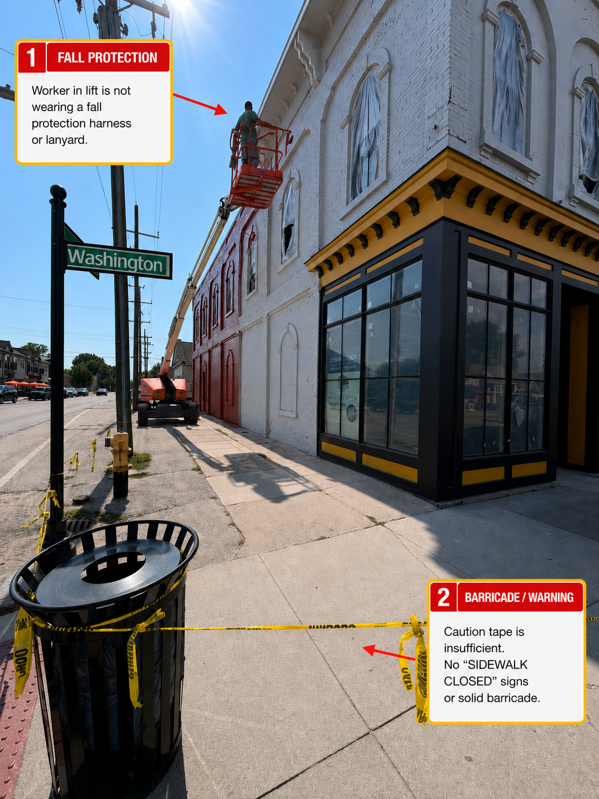
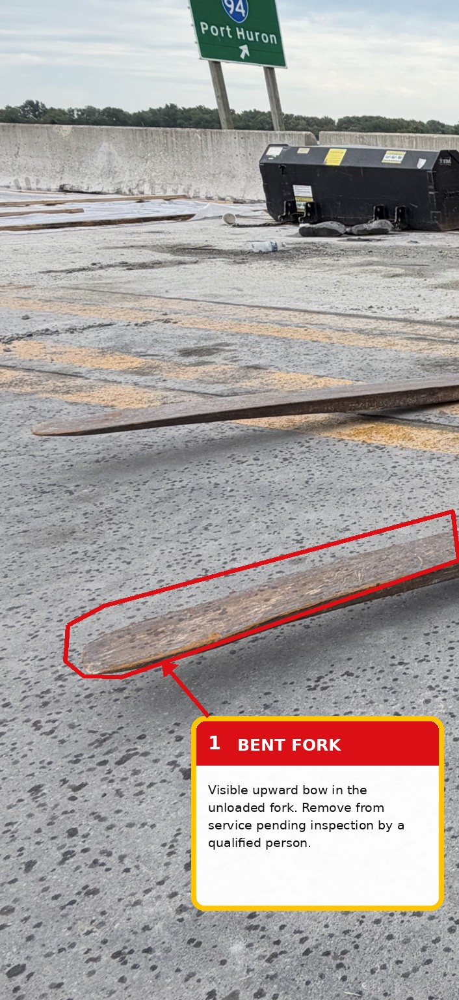

5,283
workers died from occupational injuries in 2023.
That equals one work-related fatality approximately every 99 minutes across the United States.
Source: U.S. Bureau of Labor Statistics, 2023 Census of Fatal Occupational Injuries.
Straightforward answers to common questions about forklift/PIT, AWP/MEWP and overhead crane operation and training. Built for Michigan employers, operators, supervisors and trainers who want to understand the rules—not just check a box.
Behind every number is a worker, a family and a workplace changed by an incident. These figures come from primary U.S. government sources and show why equipment knowledge, practical evaluation and everyday hazard awareness matter.
That equals one work-related fatality approximately every 99 minutes across the United States.
This national total includes fatal incidents across industries—not only construction—and reinforces the importance of planning, access, positioning and fall-hazard awareness.
The incidence rate was 2.4 cases per 100 full-time-equivalent workers.
NIOSH also reported approximately 20,000 serious forklift-related injuries each year. This is a historical prevention benchmark, not a claim about the current annual total.
IPAF's 2025 Global Safety Report analyzes powered-access incidents reported through its international Accident Reporting Portal, with the latest annual figures covering 2024.
Overturns were the most frequently reported incident type in 2024. IPAF emphasizes ground conditions, supporting structures, positioning and planning.
Entrapment reports increased 75% from 2023, reinforcing the need to assess overhead and surrounding crushing hazards before movement.
Even with fewer reports than the prior year, falls remained among the leading causes of fatal and major powered-access incidents.
Equipment pattern: Among fatal and major incidents, category 1b machines accounted for 34% of the equipment involved, followed by categories 3a and 3b at 26% each. That places static booms, mobile verticals such as scissor lifts, and mobile booms squarely inside the leading incident data.
No. This is one of the most common misunderstandings in PIT training. OSHA 29 CFR 1910.178(l)(4)(iii) requires an evaluation of each operator's performance at least once every three years. It does not automatically require every experienced, competent operator to sit through the complete classroom course again every three years.
The three-year requirement is a performance evaluation. OSHA has explained that a written test alone is not enough; in most cases a qualified evaluator observes the operator during normal workplace operation and asks appropriate questions to confirm the operator still has the knowledge and skills needed to operate safely.
Refresher training is required when there is a reason for it—for example, unsafe operation, an accident or near miss, an evaluation showing a deficiency, assignment to a different type of truck, or a workplace change that could affect safe operation. When refresher training is triggered, it should address the relevant topics and its effectiveness must be evaluated.
OSHA also specifically addresses avoiding duplicative training: previously covered topics do not automatically have to be taught again when the prior training remains appropriate and the operator has been evaluated and found competent.
B-Ready perspective: A company may choose to provide a full refresher class every three years—and for many workplaces that can be a very good safety practice—but that company policy should not be confused with OSHA's minimum three-year requirement. The regulation requires the periodic performance evaluation; full retraining is driven by need and the refresher-training triggers above.
Source: OSHA 29 CFR 1910.178(l)(4)–(5); OSHA Powered Industrial Truck training guidance and interpretations.
Many counterbalanced forklifts behave as a three-point suspension system. The two front-wheel contact points form the front of the triangle and the rear axle pivots about its center, creating the third support point. Stability depends on keeping the combined center of gravity inside that triangle.
No. Training must address the truck-related and workplace-related topics applicable to the equipment and conditions the employee actually operates. Controls, visibility, attachments and operating characteristics can differ significantly among truck types.
OSHA does not simply require a complete forklift course to be renewed every three years. Under 1910.178(l)(4)(iii), each operator's performance must be evaluated at least once every three years. Refresher training is required when one of OSHA's specified triggers occurs, such as unsafe operation, an accident or near miss, an evaluation revealing unsafe operation, assignment to a different type of truck, or a workplace change that could affect safe operation.
No. Telematics and digital checklists can document completion and help identify trends, but operators still need to understand what they are checking, recognize defects and follow the employer and manufacturer procedure when equipment must be removed from service.
This should not be treated as ordinary forklift operation. The truck, platform, securing method, capacity, safeguards and work procedure must be appropriate to the application. Start with the truck and platform manufacturer instructions and the applicable OSHA requirements before elevating personnel.
Training needs to address the actual equipment being used. Wire-, rail- or laser-guided narrow-aisle trucks can change steering, positioning and travel behavior, so operators need instruction on the installed system, alarms, limitations and emergency procedures.
MEWP means Mobile Elevating Work Platform and is the terminology commonly used by current industry standards. Equipment includes platform types such as scissor lifts and boom-supported platforms. Training and safe operation must match the specific machine and application.
Do not treat elevated entry or exit as a blanket yes. It is a special-use situation that must be addressed through the applicable standard, manufacturer instructions, employer risk assessment and site procedure.
Yes. A pre-use process is more than a visual walk-around. Operators should verify applicable controls, emergency functions and safety devices according to the manufacturer and employer procedure before operation.
Emergency and rescue procedures should be understood before work begins. Operators and designated ground personnel should know the applicable emergency-lowering procedure and what to do if the platform operator cannot lower the machine normally.
No. Their configurations and hazards differ. Fall protection, stability, positioning, slope limits and operating procedures need to match the specific equipment and manufacturer instructions.
The upper-limit device is a safeguard, not a routine operating stop. Normal lifting should be controlled with the operating control system and within the crane and hoist manufacturer's instructions.
Dragging or side pulling can introduce side loads, swing and unintended forces into the hoist, trolley, rigging and load. The hoist line should remain appropriately aligned with the load unless the equipment and procedure are specifically designed for another condition.
Stone slabs can create catastrophic crushing hazards while being separated, rigged, moved, loaded or unloaded. Personnel need to stay out of the potential fall zone, and the operation should use appropriate mechanical handling equipment, inspected racks and task-specific procedures.
B-Ready provides operator and trainer training for powered industrial trucks (PIT/forklifts), aerial work platforms/mobile elevating work platforms (AWP/MEWP), and overhead cranes.
Yes. B-Ready is built around mobile, workplace-focused equipment safety training so instruction can address the equipment and conditions employees actually encounter.
Yes. Train-the-Trainer options are available for PIT/forklift, AWP/MEWP and overhead crane programs.
Training is intended for employees who operate the applicable equipment and for employers who need qualified trainers. The appropriate course depends on the equipment, employee responsibilities and workplace application.
Yes. Employers can request training for PIT/forklifts, AWP/MEWPs and overhead cranes based on their operation and training needs.

Awareness is one of the most valuable safety skills we can build. If something looks unsafe, ask the question. Speak up before a close call becomes an injury.
See something in public worth learning from? Share a photo with B-Ready and tell us what caught your attention.

A photograph cannot replace measurements or a hands-on inspection, but an obvious change in fork profile is enough to stop and verify the equipment's condition.
Michigan requirement: MIOSHA Construction Safety Part 1, Rule 115. Always follow the equipment and fork manufacturer's inspection and replacement instructions.
Always verify the current regulation, standard, manufacturer instructions and requirements applicable to the specific equipment, workplace and jurisdiction.